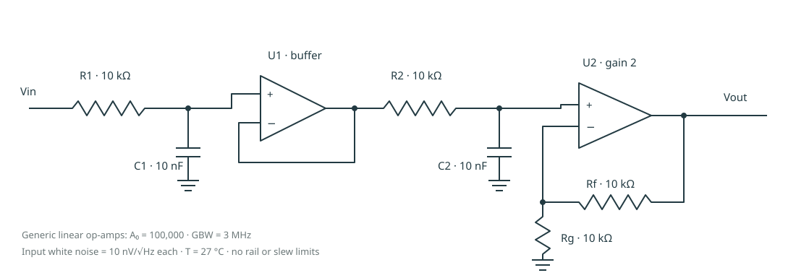

Step response
—
100 mV input step at 1 ms, with a 100 ns ramp. The linear model has no output-rail or slew-rate limit.
Download transient CSV ↓ANALOG SIGNAL CONDITIONING · NGSPICE
A small analog circuit, examined closely. Explore its frequency response, trace the noise, and see what component tolerances change.
01 / DESIGN LAB
The orange reference is an actual nominal ngspice run. The green curve predicts your settings using the same linear circuit equations; browser changes do not launch ngspice.
Export a netlist to simulate your custom design with free ngspice locally.
02 / CIRCUIT
Nominal component values shown. U1 prevents the second RC stage from loading the first. U2 supplies a gain of 1 + Rf/Rg.

03 / RECORDED EVIDENCE
These are fixed nominal-design results from actual ngspice runs. They stay unchanged when you adjust the preview above.
—
100 mV input step at 1 ms, with a 100 ns ramp. The linear model has no output-rail or slew-rate limit.
Download transient CSV ↓—
Resistor thermal noise and specified op-amp white voltage noise. Integrated only over 1 Hz–1 MHz; flicker and current noise are excluded.
Download noise CSV ↓—
128 actual SPICE AC runs: six independent uniform component variations, ±1% resistors and ±5% capacitors. Fixed seed 17; sampled range is not a worst-case guarantee.
Download all tolerance samples ↓—
The full complex response checks magnitude and phase. Noise is checked against an independent sum of uncorrelated source powers.
04 / BUILD YOUR UNDERSTANDING
Start with the beginner guide. Follow one RC pole, understand the buffer, then work through the gain and noise calculations.
sudo apt-get install ngspice make python3 make simulate make testDownload complete source ↓